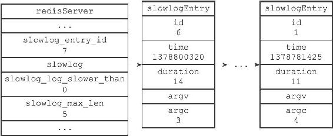
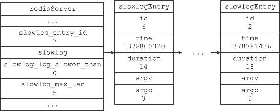

23.3 添加新日志
在每次执行命令的之前和之后，程序都会记录微秒格式的当前UNIX时间戳，这两个时间戳之间的差就是服务器执行命令所耗费的时长，服务器会将这个时长作为参数之一传给slowlogPushEntryIfNeeded函数，而slowlogPushEntryIfNeeded函数则负责检查是否需要为这次执行的命令创建慢查询日志，以下伪代码展示了这一过程：
#
记录执行命令前的时间
before = unixtime_now_in_us()
#
执行命令
execute_command(argv, argc, client)
#
记录执行命令后的时间
after = unixtime_now_in_us()
#
检查是否需要创建新的慢查询日志
slowlogPushEntryIfNeeded(argv, argc, before-after)
slowlogPushEntryIfNeeded函数的作用有两个：
1）检查命令的执行时长是否超过slowlog-log-slower-than选项所设置的时间，如果是的话，就为命令创建一个新的日志，并将新日志添加到slowlog链表的表头。
2）检查慢查询日志的长度是否超过slowlog-max-len选项所设置的长度，如果是的话，那么将多出来的日志从slowlog链表中删除掉。
以下是slowlogPushEntryIfNeeded函数的实现代码：
void slowlogPushEntryIfNeeded(robj **argv, int argc, long long duration) {
//
慢查询功能未开启，直接返回
if (server.slowlog_log_slower_than < 0) return;
//
如果执行时间超过服务器设置的上限，那么将命令添加到慢查询日志
if (duration >= server.slowlog_log_slower_than)
//
新日志添加到链表表头
listAddNodeHead(server.slowlog,slowlogCreateEntry(argv,argc,duration));
//
如果日志数量过多，那么进行删除
while (listLength(server.slowlog) > server.slowlog_max_len)
listDelNode(server.slowlog,listLast(server.slowlog));
}
函数中的大部分代码我们已经介绍过了，唯一需要说明的是slowlogCreateEntry函数：该函数根据传入的参数，创建一个新的慢查询日志，并将redisServer.slowlog_entry_id的值增1。
举个例子，假设服务器当前保存的慢查询日志如图23-2所示，如果我们执行以下命令：
redis> EXPIRE msg 10086
(integer) 1
服务器在执行完这个EXPIRE命令之后，就会调用slowlogPushEntryIfNeeded函数，函数将为EXPIRE命令创建一条id为6的慢查询日志，并将这条新日志添加到slowlog链表的表头，如图23-3所示。

图23-3 EXPIRE命令执行之后的服务器状态
注意，除了slowlog链表发生了变化之外，slowlog_entry_id的值也从6变为7了。
之后，slowlogPushEntryIfNeeded函数发现，服务器设定的最大慢查询日志数目为5条，而服务器目前保存的慢查询日志数目为6条，于是服务器将id为1的慢查询日志删除，让服务器的慢查询日志数量回到设定好的5条。
删除操作执行之后的服务器状态如图23-4所示。

图23-4 删除id为1的慢查询日志之后的服务器状态